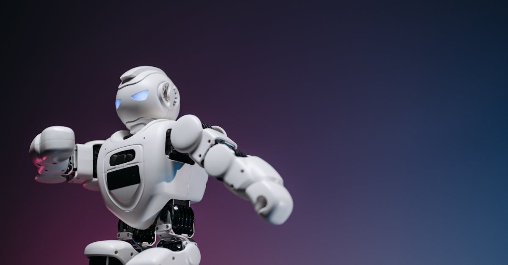

L'Épreuve de Vérité pour les Épargnants Indiens
Le paysage de l'investissement en Inde traverse actuellement une période de turbulences. Les retours sur les fonds communs de placement, autrefois considérés comme un pilier de la stratégie d'épargne de millions de particuliers, connaissent une érosion notable. En mars, les répercussions de conflits géopolitiques mondiaux ont entraîné des pertes significatives, mettant à rude épreuve la résilience des investisseurs. Pourtant, un phénomène intrigant se dessine : malgré ces revers, une majorité d'investisseurs particuliers semblent faire preuve d'une remarquable fidélité. Ils ne paniquent pas, ne vendent pas massivement, mais maintiennent le cap. Cette réticence à céder à la panique, face à des rendements décevants, soulève des questions fondamentales sur la psychologie de l'investisseur, la perception du risque et la confiance à long terme dans les véhicules d'investissement traditionnels. Les données récentes de Bloomberg Markets indiquent que, si les performances sont en berne, l'engagement des investisseurs, lui, reste étonnamment solide. Qu'est-ce qui motive cette persévérance ? Est-ce une foi inébranlable dans la reprise future, une incompréhension des risques, ou peut-être une recherche de stabilité dans un monde de plus en plus volatile ? L'analyse de cette tendance est cruciale pour comprendre l'avenir de l'épargne en Inde et, potentiellement, au-delà.
👉 À lire : Guerre Iran : L'Amérique, un roc face aux turbulences ?

Les Facteurs de Stress sur les Fonds Communs
Plusieurs éléments convergent pour expliquer la pression actuelle sur les rendements des fonds communs de placement indiens. L'élément déclencheur le plus évident a été la guerre en Ukraine, dont les répercussions économiques se sont propagées à l'échelle mondiale. Les prix de l'énergie ont grimpé en flèche, alimentant une inflation galopante. Dans ce contexte, les marchés boursiers mondiaux ont connu une forte correction en mars, et l'Inde n'a pas été épargnée. Les fonds communs de placement, qui investissent dans un panier diversifié d'actions et d'obligations, sont intrinsèquement liés aux performances globales des marchés. Lorsque les marchés chutent, les valeurs liquidatives des fonds diminuent, entraînant des pertes pour les investisseurs. Au-delà de ce choc exogène, des facteurs internes jouent également un rôle. La politique monétaire des banques centrales, y compris celle de la Reserve Bank of India (RBI), évolue vers un resserrement pour lutter contre l'inflation. La hausse des taux d'intérêt rend les emprunts plus coûteux, ce qui peut freiner l'activité économique et peser sur les bénéfices des entreprises. De plus, les préoccupations concernant la croissance économique mondiale, exacerbées par les tensions géopolitiques et les perturbations des chaînes d'approvisionnement, créent un environnement d'incertitude généralisée. Les fonds communs, censés offrir une diversification et une gestion professionnelle, se retrouvent pris dans cette tempête parfaite, voyant leurs performances affectées par une conjonction de facteurs négatifs.
👉 À lire : Défense Indienne : Le Fonds Qui Surperforme le Marché
La Psychologie de l'Investisseur Indien : Confiance ou Inertie ?
La réaction des investisseurs particuliers indiens face aux rendements médiocres des fonds communs est fascinante. Plutôt que de céder à la panique, beaucoup semblent maintenir leur engagement. Plusieurs hypothèses peuvent expliquer ce comportement. Premièrement, il y a la confiance historique dans les fonds communs de placement comme véhicule d'épargne à long terme. De nombreux Indiens les ont utilisés pendant des années pour atteindre leurs objectifs financiers, comme l'achat d'une maison, le financement de l'éducation de leurs enfants ou la préparation de la retraite. Cette expérience passée positive pourrait ancrer une croyance dans leur capacité à rebondir après les périodes difficiles. Deuxièmement, l'inertie joue un rôle non négligeable. Changer de stratégie d'investissement demande un effort conscient et peut être perçu comme risqué en période d'incertitude. Rester là où l'on est, même si les rendements ne sont pas optimaux, peut sembler la voie la plus sûre pour beaucoup. Troisièmement, la connaissance limitée des alternatives ou une certaine aversion au risque plus complexe peuvent également contribuer. Les fonds communs, avec leur structure et leur gestion professionnelle, peuvent sembler plus abordables et moins intimidants que des investissements plus directs comme le trading sur le marché des changes. Enfin, la perception du long terme est cruciale. Les investisseurs qui ont une vision sur 10, 15 ou 20 ans peuvent considérer les baisses actuelles comme des opportunités temporaires, une sorte de 'solde' sur le marché, plutôt que comme des signaux de détresse permanents. Cette combinaison de facteurs psychologiques et comportementaux explique pourquoi la fidélité, plutôt que la fuite, domine pour l'instant.
Le Rôle de la Diversification et de la Gestion Active
Dans un environnement de marché aussi volatil, la diversification, principe fondamental des fonds communs, devrait théoriquement atténuer les chocs. En théorie, un portefeuille bien diversifié, incluant des actions de différents secteurs, des obligations et éventuellement d'autres classes d'actifs, est censé mieux résister aux secousses qu'un investissement concentré. Cependant, les récentes turbulences ont montré que lorsque des facteurs macroéconomiques majeurs affectent l'ensemble de l'économie mondiale, même une diversification poussée peut ne pas suffire à garantir des rendements positifs. La corrélation entre les différents actifs peut augmenter en période de crise, réduisant ainsi les bénéfices de la diversification. C'est là qu'intervient la gestion active, le cœur de métier de nombreux gestionnaires de fonds. L'objectif est de naviguer ces périodes difficiles en prenant des décisions éclairées : renforcer certaines positions, réduire l'exposition à des secteurs jugés trop risqués, ou même identifier des opportunités de marché non évidentes. La performance des fonds communs dépend donc largement de la compétence et de la stratégie de leurs gestionnaires. Les investisseurs qui maintiennent leur fidélité comptent implicitement sur cette capacité de gestion active à surperformer le marché à long terme, même après avoir traversé des périodes de sous-performance. La question demeure : les gestionnaires actuels ont-ils les outils et l'agilité nécessaires pour relever ces défis sans précédent, ou est-il temps de repenser les stratégies traditionnelles ?
L'Impact des Technologies et de l'IA dans le Trading
Face à la complexité croissante des marchés financiers et à la rapidité des fluctuations, les approches traditionnelles de gestion d'actifs sont de plus en plus mises sous pression. Les événements récents, marqués par une volatilité accrue et des corrélations imprévisibles, soulignent les limites des stratégies purement humaines. C'est dans ce contexte que les technologies émergentes, et notamment l'intelligence artificielle (IA), prennent une importance capitale. L'IA offre des capacités d'analyse de données massives, d'identification de tendances subtiles et d'exécution d'ordres à une vitesse et une précision inatteignables pour l'homme. Dans le domaine du trading, par exemple, des agents IA sophistiqués peuvent surveiller les marchés 24h/24, 7j/7, analyser des flux d'informations en temps réel, anticiper les mouvements de prix et exécuter des transactions de manière autonome. Ces systèmes peuvent réagir instantanément aux nouvelles économiques, aux changements de sentiment du marché ou aux anomalies statistiques, potentiellement avant même que les gestionnaires humains n'aient eu le temps de réagir. Pour les investisseurs qui cherchent à optimiser leurs rendements et à gérer les risques dans un environnement incertain, l'exploration de solutions de trading automatisé basées sur l'IA devient une option de plus en plus pertinente. Ces technologies ne visent pas à remplacer l'investisseur, mais à lui fournir des outils puissants pour naviguer les complexités des marchés modernes, en particulier sur des marchés liquides et dynamiques comme le Forex.

Les Limites des Fonds Communs à l'Ère Numérique
Si les fonds communs ont longtemps servi de cheval de bataille pour l'épargne des particuliers, leur structure et leur mode de fonctionnement présentent certaines limites, particulièrement à l'heure où la technologie redéfinit les règles du jeu financier. Le principal inconvénient réside souvent dans les frais de gestion. Ces frais, prélevés annuellement, peuvent grignoter une part non négligeable des rendements, surtout lorsque ceux-ci sont déjà faibles. De plus, les fonds communs sont souvent caractérisés par une certaine lenteur dans leur prise de décision et leur adaptation aux changements rapides du marché. Les gestionnaires doivent suivre des procédures, analyser des données de manière relativement conventionnelle et leurs actions peuvent être influencées par la psychologie de groupe ou la nécessité de maintenir une certaine cohérence avec l'indice de référence. Contrairement à cela, des systèmes de trading automatisé, comme les agents IA spécialisés dans le Forex, peuvent opérer avec une réactivité et une flexibilité extrêmes. Ils ne sont pas soumis aux émotions humaines, aux biais cognitifs ou aux contraintes administratives. Leur capacité à analyser des volumes de données considérables et à exécuter des transactions à haute fréquence leur confère un avantage potentiel significatif, notamment dans des marchés où la vitesse et la précision sont primordiales. Les rendements décevants des fonds communs poussent donc naturellement certains investisseurs à chercher des alternatives plus agiles et potentiellement plus rentables.
Perspectives d'Avenir pour les Investisseurs Indiens
L'avenir de l'investissement pour les particuliers indiens dépendra de plusieurs facteurs clés. Premièrement, la trajectoire de l'économie mondiale et indienne jouera un rôle déterminant. Une reprise économique robuste, une inflation maîtrisée et une stabilité géopolitique favoriseraient un rebond des marchés. Deuxièmement, la capacité des gestionnaires de fonds à s'adapter sera cruciale. Devront-ils intégrer davantage d'outils technologiques et d'IA dans leurs stratégies pour améliorer la performance et réduire les coûts ? La pression sur les frais de gestion va probablement s'intensifier, obligeant les fonds à justifier leur valeur ajoutée. Troisièmement, l'éducation financière des investisseurs devra continuer à progresser. Une meilleure compréhension des risques, des différentes classes d'actifs et des stratégies d'investissement alternatives, y compris le trading algorithmique, permettra aux épargnants de prendre des décisions plus éclairées. Il est possible que nous assistions à une diversification accrue des stratégies d'investissement, avec une part croissante d'investisseurs explorant des solutions plus technologiques. L'idée n'est pas nécessairement d'abandonner les fonds communs, mais de compléter ces approches traditionnelles par des outils qui offrent une plus grande précision, une réactivité accrue et une gestion potentiellement plus efficiente des risques et des opportunités, particulièrement sur des marchés ouverts et liquides comme le Forex, où l'automatisation peut véritablement faire la différence.
Le Forex : Un Terrain de Jeu Idéal pour l'Automatisation IA
Alors que les fonds communs de placement traversent une zone de turbulences, certains segments des marchés financiers offrent des opportunités particulièrement adaptées aux technologies d'automatisation et à l'intelligence artificielle. Le marché des changes, ou Forex, est l'un des plus liquides et des plus dynamiques au monde. Il fonctionne 24 heures sur 24, cinq jours par semaine, offrant une continuité d'opération inégalée. Cette nature quasi-ininterrompue rend l'analyse et l'intervention humaines constantes extrêmement difficiles, voire impossibles. C'est là que l'IA excelle. Un agent IA conçu pour le trading Forex peut surveiller en permanence des milliers de paires de devises, analyser des données économiques, des indicateurs techniques et même le sentiment du marché en temps réel. Il peut identifier des schémas complexes et exécuter des transactions avec une rapidité et une précision qui dépassent de loin les capacités humaines. L'absence d'émotions est un atout majeur : l'IA ne succombe pas à la peur ou à la cupidité, des biais qui coûtent souvent cher aux traders humains. En exploitant la puissance de l'IA pour le trading Forex, les investisseurs peuvent potentiellement bénéficier d'une stratégie de trading active et continue, capable de s'adapter aux conditions changeantes du marché et de saisir des opportunités 24h/24, là où les méthodes traditionnelles pourraient être moins réactives ou plus coûteuses en frais de gestion. Cette efficacité opérationnelle et cette capacité d'adaptation constante font du Forex un terrain de jeu particulièrement fertile pour les solutions de trading automatisé par IA.
Conclusion
La fidélité des investisseurs indiens face aux rendements décevants des fonds communs de placement témoigne d'une confiance profonde mais aussi, potentiellement, d'une inertie face à des marchés en mutation rapide. Si les facteurs macroéconomiques mondiaux ont pesé sur les performances, la question de l'efficacité des stratégies d'investissement traditionnelles se pose avec acuité. Dans ce contexte, l'émergence de technologies comme l'intelligence artificielle révolutionne le monde du trading. Des agents IA capables de trader le Forex 24h/24 offrent une alternative prometteuse, alliant analyse de données avancée, exécution rapide et absence d'émotions. Ces outils permettent une gestion active et continue, particulièrement adaptée à la dynamique des marchés des changes. Alors que les investisseurs cherchent à optimiser leurs rendements et à mieux gérer les risques, l'exploration de ces solutions technologiques devient non seulement pertinente, mais souvent nécessaire pour naviguer avec succès dans le paysage financier complexe et en constante évolution du 21e siècle. La capacité à s'adapter et à intégrer l'innovation sera la clé du succès futur pour tout investisseur avisé.